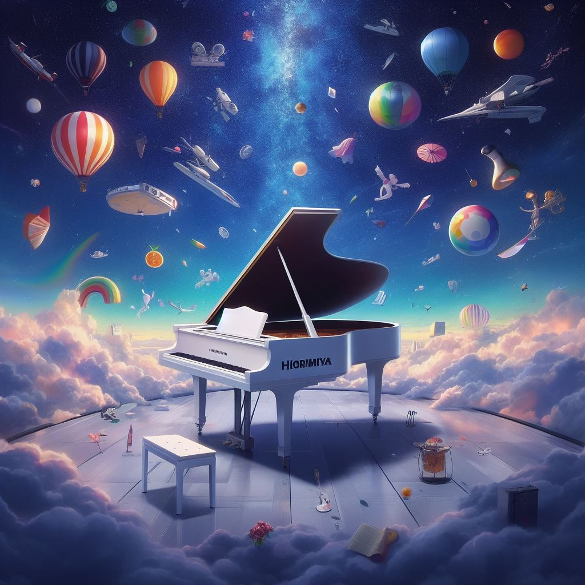

Deixe a música preencher sua vida com harmonia e alegria.
Explore meu mundo musical e descubra minhas paixões por diferentes gêneros, artistas e instrumentos que me inspiram todos os dias.
Compartilhe sua paixão musical! Conheça meu mundoAproveite a playlist especial enquanto navega para uma experiência mais agradável!
Minha Playlist Especial
Descubra os músicos e artistas que moldaram minha paixão pela música ao longo dos anos, inspirando-me com suas melodias cativantes e letras emocionantes.
Instrumentos Perfeitos
De cordas a teclas, esses instrumentos formam a melodia perfeita, adicionando cor e textura à minha paixão pela música.
- Piano: Meu primeiro amor musical. Sua perfeição imaculada sempre me fascinou. Capaz de expressar uma infinidade de emoções, mas com uma curva de aprendizado desafiadora, tenho profunda admiração por aqueles que o dominam.
- Teclado: Uma extensão moderna do piano, capaz de transmitir uma vibração eletrônica envolvente. Seu potencial versátil e capacidade de criar uma gama diversificada de sons sempre me encantam.
- Violino: Meu caso de amor repentino. Foi a destreza e a beleza avassaladora de uma performance inesperada que me cativou. A influência de um certo anime também não nega minha afinidade por esse instrumento sublime.
- Guitarra: Embora minha compreensão seja mais superficial, sua presença marcante e solos poderosos sempre capturam minha atenção. É o instrumento que brilha intensamente em qualquer composição musical.
- Bateria: Outro instrumento que exala energia pura. Sua habilidade em estabelecer o ritmo e sua impressionante velocidade sempre me deixam fascinado. Nada se compara à sua presença dominante e à energia contagiante que traz para qualquer música.
Detalhes extras: Tenho uma queda por músicas e instrumentos com ritmos rápidos e enérgicos, uma paixão que reflete minha atração pela habilidade técnica e pela emoção fervorosa que a música pode oferecer.